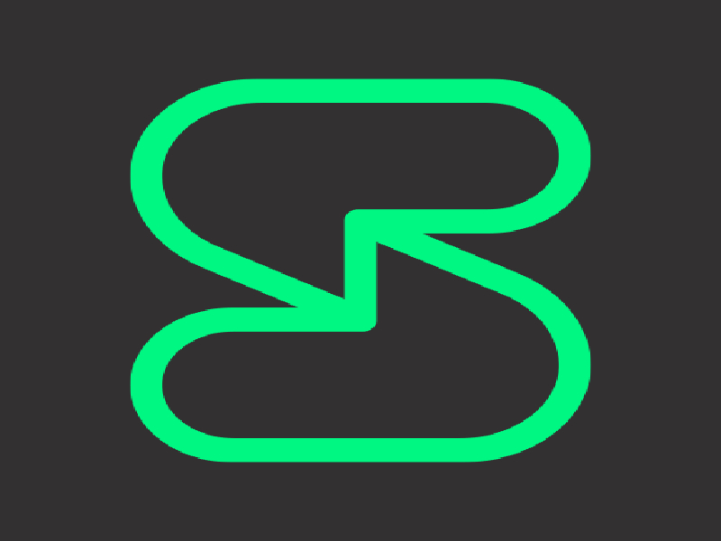

Session

PROS
Onion Routed
Decentaralized Server
Doesn't Collect Metadata
No Need Personally Identifiable Information To Register
Gold Standard Encryption(Open Whisper)
All Are Encrypted:1 to 1 Conversations, Closed Group, Open Group
FOSS
CONS
Stores Messages On Swarm For 2 Weeks
(But it's encrypted and it is also used for switching devices
so that you can still see your messages if you switch device)
Slower speed due to onion routing
Less convenient
You can download it here